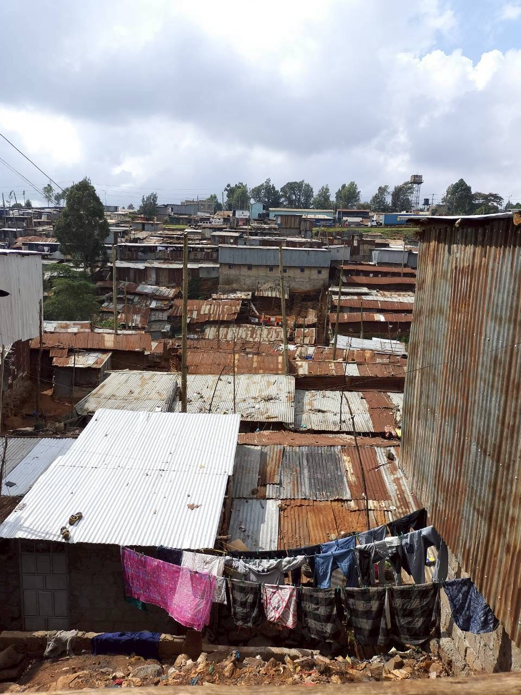
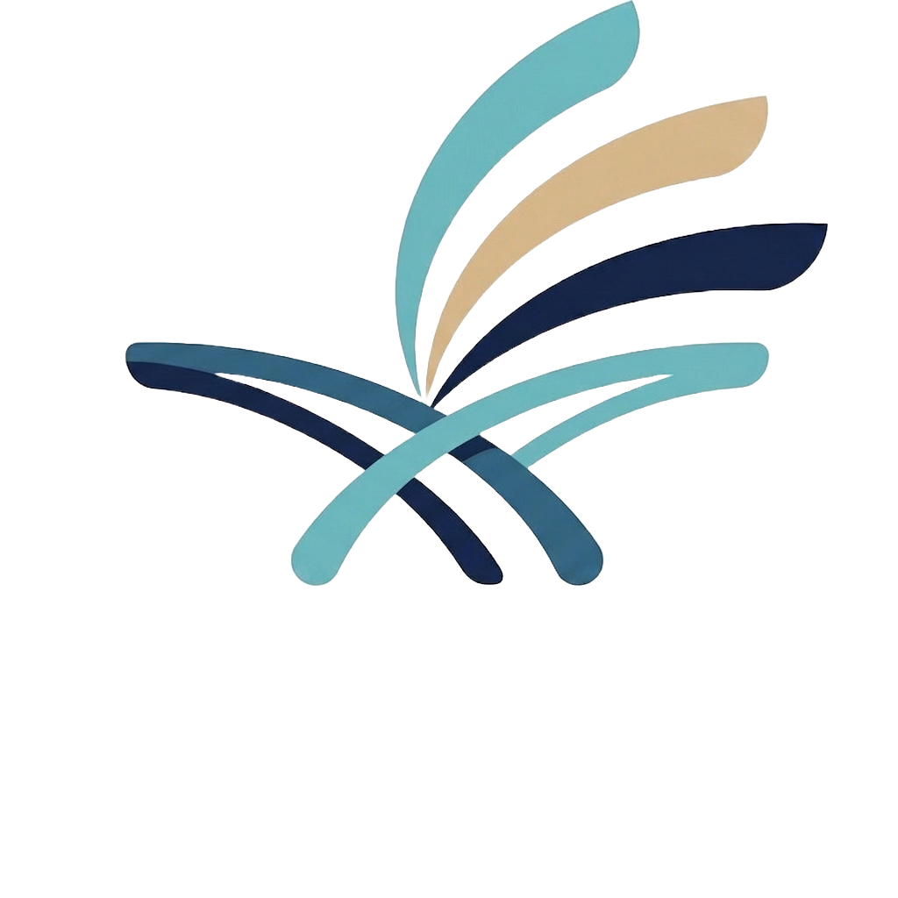
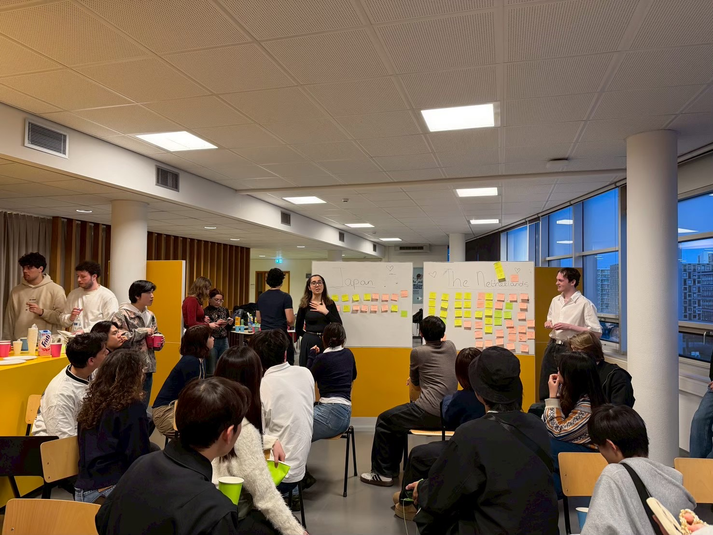
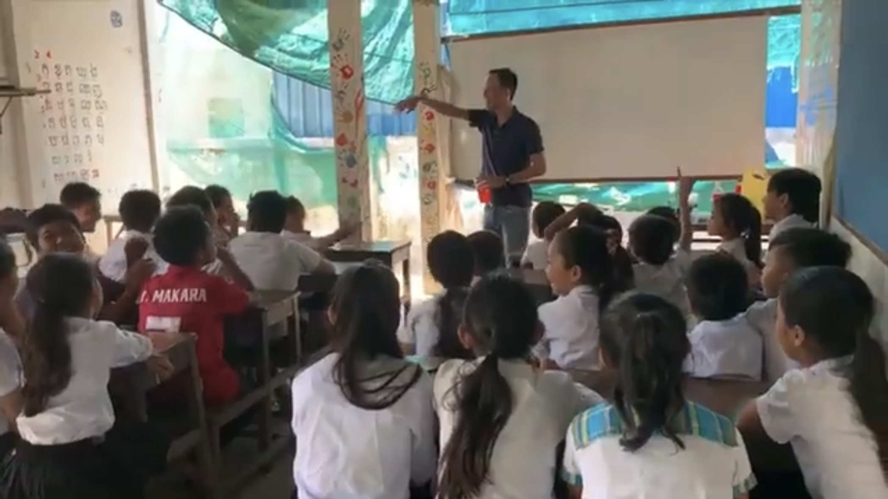
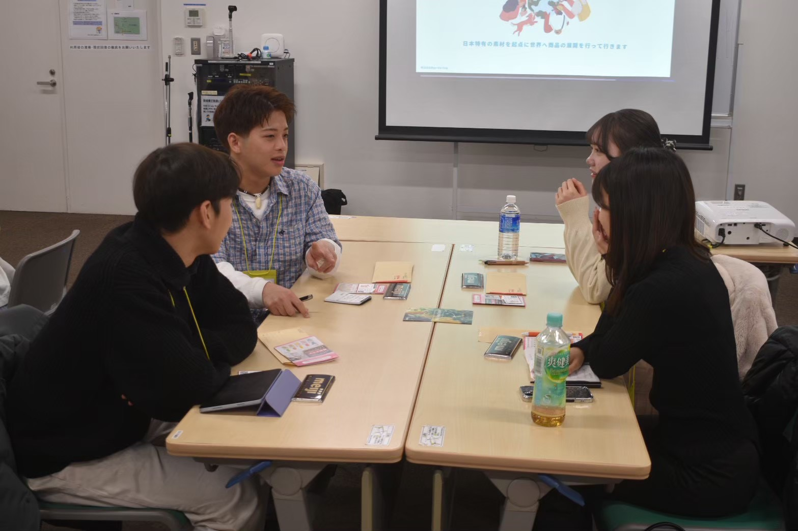
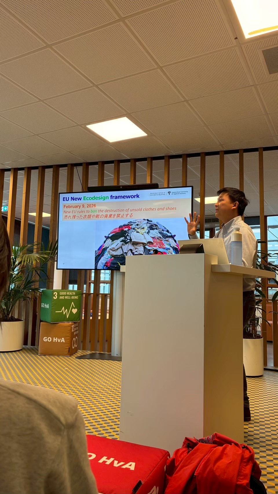
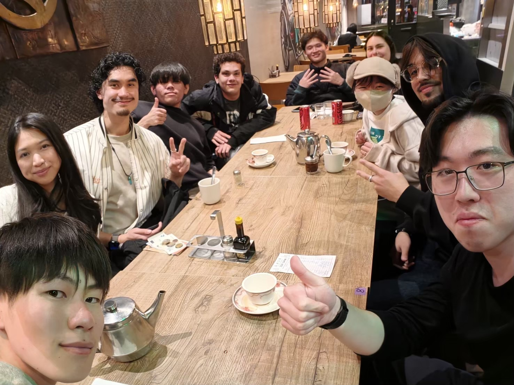

Overseas Study Camp
海外スタディキャンプ
海外で活躍する実践者との対話や現地での体験を通じて、 国際協力のリアルに触れるプログラムです。 国際協力を「遠い世界の話」ではなく、自分自身の選択肢として捉えるきっかけをつくります。

CrossroadsInternational Cooperation / Career / Social Impact
Crossroadsは、国際協力をキャリアにしたい学生の選択肢を広げるために活動する学生団体です。
社会課題の解決に関心を持つ学生は少なくありません。 しかし、その想いを将来の仕事へとつなげる道筋は、決して十分に見えているとは言えません。
国際協力と一言で言っても、その関わり方は多様です。 国際機関、NGO、ソーシャルビジネス、企業の海外事業、CSR、教育、研究。 社会課題と向き合う方法は数多く存在します。
一方で、そうした選択肢に出会う機会や、実際にその道を歩む人々の声を聞く機会は限られています。 Crossroadsは、この課題に向き合っています。
Mission
Crossroadsは、国際協力を志す学生が多様なロールモデルと出会い、 自分らしいキャリアの可能性を見つけられる機会を提供します。
私たちは、「正解の進路」を示すのではありません。 一人ひとりが、自分自身の価値観と向き合いながら、自ら選択できる状態を目指しています。

Overseas Study Camp
海外で活躍する実践者との対話や現地での体験を通じて、 国際協力のリアルに触れるプログラムです。 国際協力を「遠い世界の話」ではなく、自分自身の選択肢として捉えるきっかけをつくります。

Career Development
理想のキャリアを描き、その実現に向けたロードマップを考える育成プログラムです。 対話や振り返りを重ねながら、社会課題との関わり方を具体化していきます。



Crossroadsには、「交差点」と「人生の分岐点」という二つの意味があります。
私たちは、社会課題の解決は一つの専門性だけでは実現できないと考えています。 国際協力、教育、ビジネス、行政、研究。 異なる分野や立場の人々が出会い、対話し、協力することで、新しい可能性が生まれます。
Crossroadsは、異なる分野が協力するための交差点であり、 学生と社会が出会う交差点であり、 人々や社会の未来を変える分岐点です。
Impact / 2025–2026
プログラム参加者
協力企業・団体
過去開催国：オランダ
設立
Vision
私たちは、社会課題に向き合いたいという想いが、情報不足や機会不足によって失われることのない社会を目指します。 どんな背景を持つ人でも、自分らしい形で社会課題と関わることができる。 そのために必要なのは、特別な才能ではなく、多様な選択肢との出会いです。
Partners

About